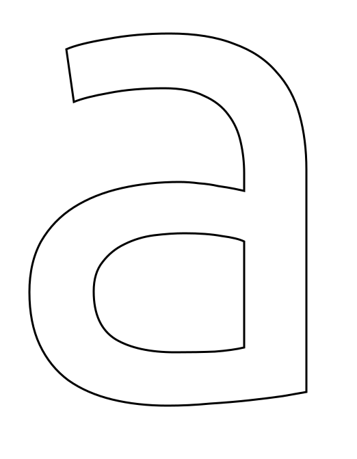
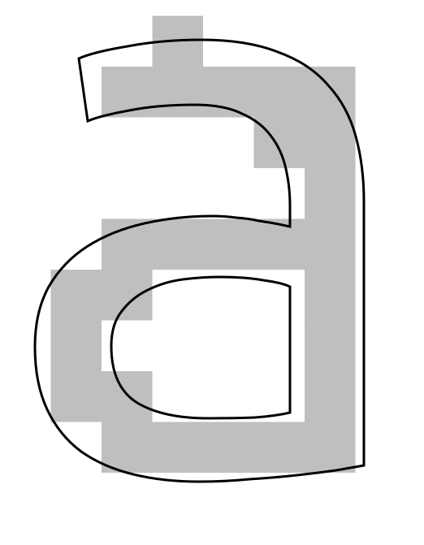
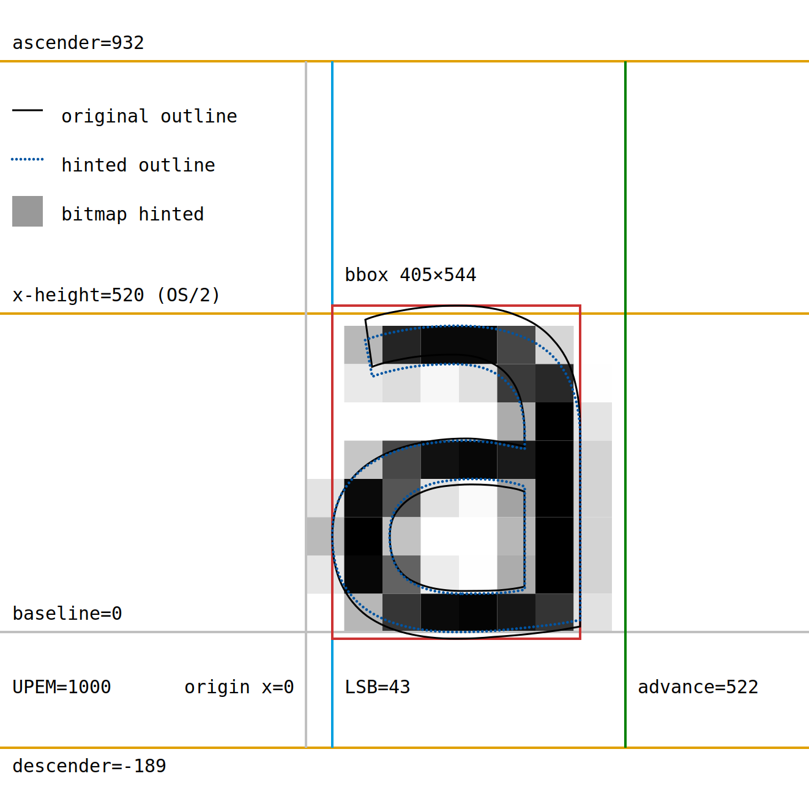

Outline and bitmap (monochrome) rendering with no hinting
Font: Ubuntu Regular · Size: 16 px (16 ppem) · Hinting: off


Outline and bitmap (monochrome) rendering with hinting
Font: Ubuntu Regular · Size: 16 px (16 ppem) · Hinting: on (dotted blue outline + bitmap)

Outline and bitmap (grayscale) rendering without and with hinting
Font: Ubuntu Regular · Size: 16 px (16 ppem) · Hinting: off (left) and on (right)


View of the glyphs structure and metrics
Numbers in em-units.
